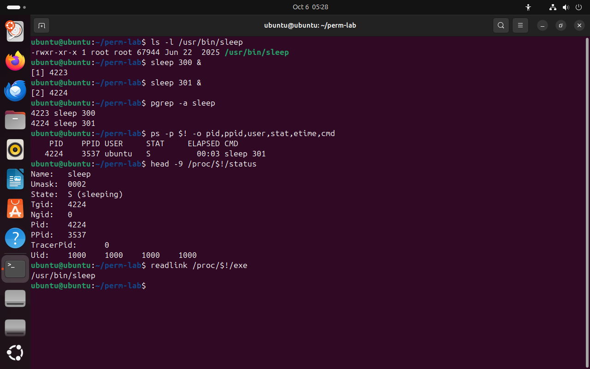

Часть 1 из 7
Программа и процесс
В этой части разберём, чем запущенная программа отличается от файла программы на диске, что такое номер процесса PID и где ядро показывает сведения о каждом процессе.
1.1 Файл программы и запущенный процесс
На прошлых занятиях мы проверяли права «для процесса»: у процесса есть UID и группы, и по ним ядро решает, открыть ли файл. Сегодня разберём сам процесс: как он появляется, в каких состояниях бывает, как им управлять и как он завершается.
Программа — это файл на диске: /usr/bin/sleep лежит там, пока его не удалят, и сам ничего не делает. Когда программу запускают, ядро создаёт процесс: выделяет память, загружает в неё код программы, заводит запись со сведениями о процессе и начинает выполнять код. Одну программу можно запустить много раз — каждый запуск становится отдельным процессом со своей памятью.
Программа и процесс соотносятся как рецепт и приготовление блюда. Рецепт в книге — это программа: он лежит на полке и ничего не готовит. Процесс — это приготовление блюда по рецепту на конкретной кухне: у него есть повар, начатая работа, кастрюли на плите. Два повара могут готовить по одному рецепту одновременно, и это будут два независимых приготовления.
1.2 Как увидеть процесс
Знак & в конце команды запускает её в фоне и сразу возвращает приглашение, не дожидаясь завершения. Оболочка печатает номер задания в квадратных скобках и PID нового процесса. Фон нужен, чтобы процесс работал, пока мы его рассматриваем.
Команда sleep 300 ничего не делает 300 секунд и завершается — удобный процесс для опытов. Переменная $! хранит PID последнего процесса, запущенного в фон, поэтому номер не нужно переписывать вручную.
| Команда | Что выводит |
|---|---|
pgrep -a sleep | PID и командную строку всех процессов с именем sleep |
ps -p PID -o поля | выбранные поля одного процесса: pid, ppid, user, stat, etime — время работы, cmd — команда |
head -9 /proc/PID/status | первые строки сведений, которые ядро хранит о процессе |
readlink /proc/PID/exe | путь к файлу программы, из которой запущен процесс |
Каталог /proc мы разбирали на занятии 3: его файлы ядро создаёт в момент чтения. Для каждого процесса там есть каталог с номером PID. Файл status в нём содержит имя процесса, состояние, PID, номер родителя PPid и UID владельца, а ссылка exe указывает на файл программы.
ls -l /usr/bin/sleep# программа: файл на дискечто делает
Что делает команда. Выводит строку файла программы sleep: это обычный файл на диске.
По частям:
ls- вывести содержимое каталога
-l- подробный список: права, владелец, размер, дата
/usr/bin/sleep- что показать (абсолютный путь)
sleep 300 &# первый процессчто делает
Что делает команда. Запускает sleep на 300 секунд в фоне; оболочка печатает номер задания и PID.
По частям:
sleep- ничего не делать указанное число секунд
300- сколько секунд
&- запустить команду слева в фоне и сразу продолжить
sleep 301 &# второй процесс той же программычто делает
Что делает команда. Запускает второй процесс той же программы в фоне.
По частям:
sleep- ничего не делать указанное число секунд
301- сколько секунд
&- запустить команду слева в фоне и сразу продолжить
pgrep -a sleep# оба процессачто делает
Что делает команда. Выводит PID и командную строку всех процессов sleep.
По частям:
pgrep- найти процессы и вывести их PID
-a- выводить вместе с PID командную строку
sleep- образец имени
ps -p $! -o pid,ppid,user,stat,etime,cmd# сведения о последнемчто делает
Что делает команда. Выводит номер, родителя, владельца, состояние, время работы и команду последнего фонового процесса.
По частям:
ps- вывести сведения о процессах
-p $!- выбрать процесс с PID $!
-o pid,ppid,user,stat,etime,cmd- выводить столбцы pid,ppid,user,stat,etime,cmd
head -9 /proc/$!/status# то, что хранит ядрочто делает
Что делает команда. Выводит первые девять строк сведений, которые ядро хранит о последнем фоновом процессе.
По частям:
head- оставить только первые строки
-9- сколько первых строк оставить: 9
/proc/$!/status- какой файл (абсолютный путь)
readlink /proc/$!/exe# из какой программы запущенчто делает
Что делает команда. Показывает, из какого файла программы запущен процесс.
По частям:
readlink- показать, куда указывает символическая ссылка
/proc/$!/exe- какая ссылка (абсолютный путь)
- 1файл программы на диске: права и размер
- 2оболочка печатает номер задания и PID
- 3pgrep: два процесса одной программы
- 4PID последнего процесса
- 5PPID — номер родителя, оболочки
- 6состояние S — процесс спит
- 7ссылка exe указывает на файл программы


Весь снимок ↗Один файл программы и два процесса; сведения о процессе в /proc.
Что показывает снимок. Один файл /usr/bin/sleep запущен дважды: два процесса с номерами 4223 и 4224 и общим родителем — оболочкой 3537; ядро хранит в /proc/4224/status состояние S, маску и UID.
Где это пригодится. По PID находят процесс, которому нужно послать сигнал, а по ссылке /proc/PID/exe проверяют, из какого файла программы он запущен.
Итоги части 1
- Программа — файл на диске; процесс — её запуск с памятью, номером и владельцем.
- PID — номер процесса, по нему процессу посылают сигналы и находят его сведения.
&запускает команду в фон;$!— PID последнего фонового процесса.pgrep -a имя,ps -p PID -o поляи каталог/proc/PIDпоказывают сведения о процессе.
В отчётСнимок двух процессов sleep с подписанными PID, PPID и состоянием.